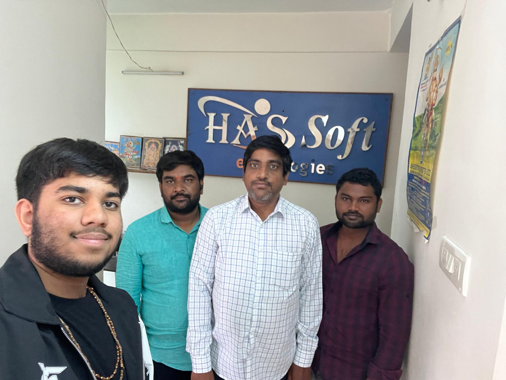
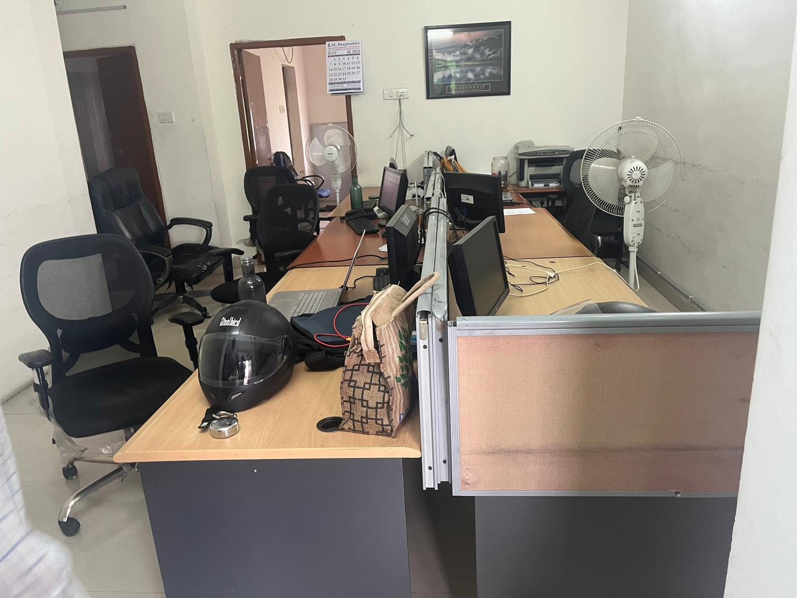
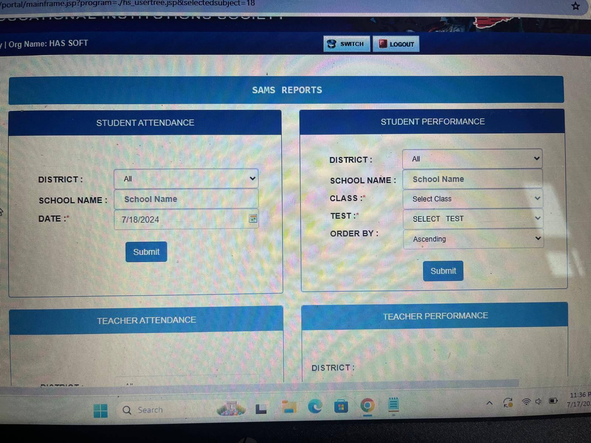

Software Engineering Intern – Hassoft Technologies
Supervisor Contact Information
Name: NVS Sastry
Email: sastry@hassofttechnologies.com.com
Phone: 9666910760
Experience Overview
During my internship at Hassoft Technologies, I worked on a school performance monitoring system responsible for maintaining student information. I was handling student grades, files, and reports, including family and financial information. I maintained organized records of this data to ensure that information was accurate and up to date. Towards the end of the internship, I was also involved in tracking both student and teacher attendance and progress. Through this internship, I learned how to manage large databases, create detailed reports, and collaborate with teams to achieve set goals and deadlines.
Documentation & Photos


